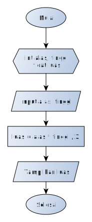
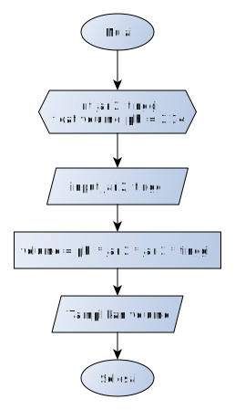

Jobsheet 04 - Sintaks, Tipe Data, Variabel, Input-Output, Sequence
Kompetensi
- Mahasiswa memahami sintaks dasar bahasa pemrograman Java.
- Mahasiswa mampu mengimplementasikan tipe data, variabel, Input-Output ke dalam program bahasa Java.
- Mahasiswa memahami konsep alur kontrol sequence pada program.
Alat dan Bahan
- PC/Laptop
- Text Editor (Sublime Text)
- JDK
Ulasan Teori
Dalam membuat sebuah program, kita harus mengikuti struktur dasar dari bahasa pemrograman. Ada beberapa komponen yang hampir selalu muncul setiap kali kita membuat program. Komponen-komponen tersebut antara lain:
- Fungsi main()
- Deklarasi variabel
- Perintah (statement)
- Keyword
- Komentar
- Kurung kurawal
Berikut adalah contoh kode program beserta penjelasan strukturnya:
// "import" untuk menyertakan fungsi-fungsi dari sebuah library
import java.util.Scanner;
// program harus ditulis dalam sebuah class
class PersegiPanjang { // kurung kurawal buka
public static void main(String args[]) {
// deklarasi variabel
int panjang;
int lebar;
int luas;
// statement
panjang = 5;
lebar = 3;
luas = panjang * lebar;
System.out.println("Luas persegi panjang: " + luas);
}
} // kurung kurawal tutup
Fungsi Utama/Fungsi main()
Agar program java dapat dijalankan, harus terdapat fungsi main(). Program yang
tidak memiliki fungsi ini, maka tidak dapat dijalankan secara langsung. Ketika
fungsi main dipanggil, akan dieksekusi perintah-perintah/statement yang terdapat
dalam blok kodenya. Fungsi main dibuka dengan kurung kurawal buka { dan kurung
kurawal tutup }. Secara garis besar, isi dari fungsi main() pada program di
atas adalah:
- Perintah untuk memberikan nilai panjang dan lebar dengan nilai 5 dan 3.
- Perintah untuk menghitung luas segiempat.
- Perintah untuk menampilkan luas yang telah dihitung ke layar.
Deklarasi Variabel
Variabel adalah tempat untuk menyimpan data. Deklarasi variabel adalah sebuah
perintah agar komputer menyediakan variabel yang akan kita pakai. Pendeklarasian
variabel harus diawali dengan tipe variabel, nama variabel kemudian diakhiri
dengan titik-koma ;.
Beberapa tipe variabel yang sering digunakan:
- Variabel Integer (int) untuk menyimpan bilangan bulat/tanpa koma. Contoh: 12, 1, 76, 100, 99.
- Variabel float (float) untuk menyimpan bilangan berkoma/real. Contoh: 12.8, 1.5, 3.14.
- Variabel Strin untuk menyimpan karakter/kata/kalimat bisa berupa huruf ataupun angka. Contoh: "Polinema", "Budi", "Berat badan 60 kg", "Rp. 500.000"
Dalam memberi nama variabel ada beberapa aturan yang harus dipenuhi, antara lain:
- Diawali dengan huruf atau karakter underscore
_ - Nama variabel bersifat case sensitive (huruf besar dianggap berbeda dengan huruf kecil)
- Tidak boleh menggunakan spasi (sebagai pengganti dapat digunakan tanda underscore atau penggunaan huruf besar pada awal kata berikutnya)
- Tidak boleh menggunakan karakter khusus seperti
<,>,*,?,=dan sebagainya.
Beberapa Keyword yang tidak boleh digunakan sebagai nama variabel:
| abstract | default | if | private | this |
| assert | do | implements | protected | throw |
| boolean | double | import | public | throws |
| break | else | instanceof | return | transient |
| byte | enum | int | short | try |
| case | extends | interface | static | void |
| catch | final | long | strictfp | volatile |
| char | finally | native | super | while |
| class | float | new | switch | |
| continue | for | package | synchronized |
Selengkapnya, tipe-tipe variabel yang sering dipakai dalam pemrograman java ada di tabel berikut ini:
| Type | Values | Default | Size | Range |
|---|---|---|---|---|
| byte | signed integers | 0 | 8 bits | -128 to 127 |
| short | signed integers | 0 | 16 bits | -32768 to 32767 |
| int | signed integers | 0 | 32 bits | -2147483648 to 2147483647 |
| long | signed integers | 0 | 64 bits | -9223372936854775808 to 9223372936854775807 |
| float | IEEE 754 floating point | 0.0 | 32 bits | approximately ±3.40282347E+38F |
| double | IEEE 754 floating point | 0.0 | 64 bits | approximately ±1.79769313486231570E+308 |
| char | Unicode character | \u0000 | 16 bits | \u0000 to \uFFFF |
| boolean | true, false | false | 1 bit used in 32 bit integer | NA |
Selain harus memperhatikan jenis tipe data yang digunakan, tipe data juga
mempunyai penulisan nilai yang berbeda. Sebagai contoh penulisan nilai tipe data
char harus diapit dengan tanda ' (petik satu). Variabel String harus
menggunakan tanda " (petik dua). Dalam penulisan bilangan pecahan digunakan
tanda . (titik) bukan koma. Secara umum, format deklarasi variabel dapat
dinyatakan sebagai berikut:
tipe_data nama_variabel;
tipe_data nama_variabel = nilai_awal;
Contoh:
int bilangan;
float volume, luas;
int angka = 1;
float phi = 3.14f;
char kelas = 'A';
String nama = "Joko Sembung";
Sequence/Statement
Perintah/statemen digunakan untuk memerintahkan komputer untuk melakukan sesuatu. Contoh, pada program menghitung luas persegi panjang diatas, ada beberapa statemen:
Perintah
panjang = 10;memerintahkan komputer untuk mengisi variabel panjang dengan nilai 10. Begitu juga dengan perintahlebar = 5;Perintah
luas = panjang * lebar;memerintahkan komputer untuk menghitung hasil perkalian dari panjang dan lebar, lalu menyimpannya kedalam variabel luas.Perintah
System.out.println("Luas persegi panjang: " + luas);memerintahkan komputer untuk menampilkan isi variabel luas ke layar.
Setiap statement harus diakhir dengan titik koma ;, kecuali
statement-statement tertentu seperti if, for, while, class dan
sebagainya.
Keyword import
Digunakan untuk memanggil library/fungsi-fungsi yang telah disediakan oleh
bahasa Java. Perintah import java.util.Scanner; digunakan untuk memanggil
library Scanner yang diperlukan untuk menerima input dari keyboard yang akan
dibahas di bagian input.
Kurung Kurawal
Kurung kurawal berfungsi untuk memberitahu komputer bahwa perintah-perintah di dalamnya merupakan satu kesatuan. Singkatnya, kurung kurawal digunakan untuk membuat sekumpulan perintah (compount statement/block).
Output
Setiap program pasti menghasilkan output. Salah satu cara untuk menampilkan output adalah dengan menampilkannya ke layar. Untuk menampilkan ke layar, ada beberapa cara:
System.out.print(“Hello world”);Perintah ini akan menampilkan kata Hello world ke layar, atau apapun yang kita tuliskan didalam tanda petik.System.out.println(“Hello world”);Perintah ini akan menampilkan kata Hello world ke layar, atau apapun yang kita tuliskan didalam tanda petik, sekaligus memberi perintah ganti baris di akhir kata/kalimat.System.out.println(panjang);Perintah ini akan menampilkan isi variabel panjang ke layar. Perhatikan bahwa untuk menampilkan isi variabel, tidak perlu menggunakan tanda petik ( “ ).System.out.println(“Panjang segi empat: “ + panjang);Perintah ini akan menampilkan kalimat “Panjang segi empat: “ kemudian disambung dengan isi variabel panjang ke layar. Perhatikan untuk menyambung kalimat dengan isi variabel, digunakan tanda plus ( + ).
Contoh:
- Menggunakan System.out.print()
System.out.print("Hello World!"); System.out.print("Nama saya Jack");Hello World!Nama saya Jack - Menggunakan System.out.println()
System.out.println("Hello World!"); System.out.println("Nama saya Jack");Hello World! Nama saya Jack - Menampilkan isi variabel panjang
int panjang = 10; System.out.println(panjang);10 - Menampilkan kalimat "Panjang segi empat" dan disambung dengan isi variabel
panjang
int panjang = 10; System.out.println("Panjang segi empat: " + panjang);Panjang segi empat: 10
Pada output program terdapat beberapa karakter khusus. Karakter-karakter ini dikenal dengan istilah escape sequence. Karakter-karakter yang umum digunakan dapat dilihat pada tabel berikut ini:
| Escape Sequence | Keterangan |
|---|---|
| \n | baris baru |
| \ | Karakter backslash |
| %% | Karkter % |
| \t | Karakter tab |
| \" | Karakter " |
Input
Untuk membaca input dari keyboard, pertama-tama kita pastikan bahwa library
Scanner sudah kita sertakan. Caranya adalah dengan menuliskan perintah import
java.util.Scanner; di baris paling atas dari kode program kita. Selanjutnya
kita tuliskan perintah deklarasi scanner berikut ini didalam fungsi main():
Scanner sc = new Scanner(System.in);
Selanjutnya, tergantung dari jenis input yang akan kita masukkan, berupa bilangan bulat (int), bilangan koma (float/double), atau karakter (String).
- Jika input berupa bilangan bulat, maka perintahnya adalah:
nextInt(); - Jika input berupa bilangan koma, maka perintahnya adalah:
nextFloat(); - Jika input berupa bilangan bulat, maka perintahnya adalah:
nextLine();
Contoh:
Input berupa bilangan bulat:
import java.util.Scanner; class Hello { public static void main(String args[]) { Scanner sc = new Scanner(System.in); int usia; System.out.print("Masukkan usia anda: "); usia = sc.nextInt(); System.out.print("Usia anda adalah: " + usia); } }Hasil
Masukkan usia anda: 20 Usia anda adalah 20Input berupa dua buah bilangan:
import java.util.Scanner; class Hello { public static void main(String args[]) { Scanner sc = new Scanner(System.in); int panjang, lebar; System.out.print("Masukkan panjang: "); panjang = sc.nextInt(); System.out.print("Masukkan lebar: "); lebar = sc.nextInt(); System.out.print("Nilai dari panjang: " + panjang); System.out.print("Nilai dari lebar: " + lebar); } }Hasil
Masukkan panjang: 15 Masukkan lebar: 7 Nilai dari panjang: 15 Nilai dari lebar: 7
Catatan:
Jika didalam program terdapat beberapa input yang berbeda-beda tipe datanya, maka deklarasi scanner harus dibuat sejumlah tipe data input yang berbeda tersebut. Misalkan terdapat satu input berupa bilangan bulat dan satu input berupa String, maka perlu dibuat dua deklarasi scanner (satu untuk int dan satu untuk String).
Contoh:
import java.util.Scanner;
class Hello {
public static void main(String args[]) {
Scanner scInt = new Scanner(System.in);
Scanner scString = new Scanner(System.in);
int usia;
String nama;
System.out.print("Masukkan usia anda: ");
panjang = scInt.nextInt();
System.out.print("Masukkan nama anda: ");
lebar = scString.nextLine();
System.out.print("Nama anda: " + nama);
System.out.print("Usia anda: " + usia);
}
}
Langkah Praktikum
ikuti langkah-langkah praktikum berikut ini.
Praktikum 1
- Buka teks editor
- Buat file baru, beri nama "Hitung.java"
- Tuliskan struktur dasar bahasa java yang berisi fungsi main().
- Tambahkan import library Scanner di bagian paling atas kode program.
import java.util.Scanner; - Deklarasikan Scanner
Scanner sc = new Scanner(System.in); - Buatlah variabel bertipe int, beri nama variabel tersebut dengan angka.
int angka; - Tambahkan kode berikut ini untuk menerima input dari keyboard
System.out.print("Masukkan angka: "); angka = sc.nextInt(); - Tambahkan kode berikut ini untuk menampilkan isi dari variabel angka
System.out.println("Isi variabel angka: " + angka); - Lakukan kompilasi kemudian jalankan program. Amati apa yang terjadi.
Praktikum 2
- Buat file baru beri nama Segitiga.java
Amati flowchart program untuk menghitung luas segitiga berikut ini:

Buatlah struktur dasar program Java yang terdiri dari fungsi main().
- Tambahkan library Scanner
- Buat deklarasi Scanner.
- Buat variabel int untuk alas dan tinggi, kemudian variabel float untuk luas.
int alas, tinggi; float luas; - Tuliskan perintah untuk menginputkan alas dan tinggi:
System.out.print("Masukkan alas: "); alas = sc.nextInt(); System.out.print("Masukkan tinggi: "); tinggi = sc.nextInt(); - Tuliskan perintah untuk menghitung luas segitiga berikut ini:
luas = alas * tinggi / 2; - Tampilkan isi variabel luas
System.out.println("Luas segitiga: " + luas); - Lakukan kompilasi dan jalankan program. Amati apa yang terjadi.
Praktikum 3
- Buat file baru beri nama Biodata.java
- Buat struktur dasar program java yang berisi fungsi main()
- Tambahkan library Scanner.
- Buat dua deklarasi Scanner. Satu untuk input berupa int dan satu untuk
String.
Scanner scInt = new Scanner(System.in); Scanner scString = new Scanner(System.in); - Buat variabel String untuk nama dan noHp, kemudian variabel int untuk usia
dan tinggiBadan.
String nama, noHp; int usia, tinggiBadan; Tuliskan kode untuk menginputkan nama, noHP, usia dan tinggiBadan.
System.out.print("Masukkan nama: "); nama = scString.nextLine(); System.out.print("Masukkan no HP: "); noHp = scString.nextLine(); System.out.print("Masukkan usia: "); usia = scInt.nextInt(); System.out.print("Tinggi badan: "); tinggiBadan = scInt.nextInt();- Tuliskan kode untuk menampilkan biodata
System.out.println("Nama: " + nama); System.out.println("No. HP: " + noHp); System.out.println("Usia: " + usia); System.out.println("Tinggi badan: " + tinggiBadan); - Lakukan kompilasi dan jalankan program, amati apa yang terjadi.
Pertanyaan
Jawablah pertanyaan berikut ini.
- Apa yang dimaksud dengan variabel?
Jelaskan masing-masing kegunaan tipe variabel berikut ini:
- int
- float
- String
Apa kegunaan dari perintah:
- int angka;
- String alamat;
- int panjang = 100;
- import java.util.Scanner;
- Scanner sc = new Scanner(System.in);
- System.out.print("Isi variabel angka: " + angka);
- angka = sc.nextInt();
- alamat = sc.nextLine();
Amati kode program berikut ini:
import java.util.Scanner;
class Hello {
public static void main(String args[]) {
Scanner sc = new Scanner(System.in);
int usia;
System.out.print("Masukkan usia anda: ");
umur = sc.nextInt();
System.out.println("Usia anda: " + usia);
}
}
Bagian mana kode tersebut terdapat kesalahan? dan seharusnya bagaimana?
Tugas
Kerjakan tugas sesuai dengan instruksi berikut ini.
Dengan menggunakan fungsi
System.out.println()dan penggunaan karakter escape sequence, buatlah program untuk menampilkan biodata anda dengan format seperti berikut ini:NIM : "1234567890" Nama : "Indah Cantik Jelita" Kelas : "TI-MI" Alamat : "Malang"Perhatikan tabel di bawah ini:
| Nama Variabel | Tipe Data | Nilai awal | Keterangan |
|---|---|---|---|
| kampus | Kalimat | Polinema | |
| tingkat | Bilangan bulat | 1 | |
| kelas | Karakter | Z | nilai awal = kelas anda |
| bilanganBulat | Bilangan bulat | 10 | |
| bilanganPecahang | Bilangan pecahan | 3.33333 | |
| karakter | Karakter | C |
Dari informasi tabel tersebut, buatlah program untuk menampilan hasil seperti pada gambar di bawah ini!
Saya mahasiswa Polinema kelas 1Z.
Saya sedang belajar menampilkan nilai:
Bilangan bulat 10
Bilangan pecahan 3.33
Karakter C
Perhatikan baik-baik diagram flowchart program menghitung volume tabung berikut ini:

Implementasikan flowchart yang telah dirancang ke dalam program dengan menggunakan bahasa pemrograman java!